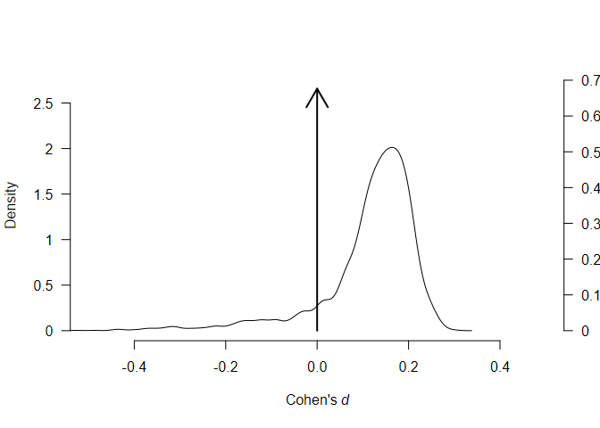
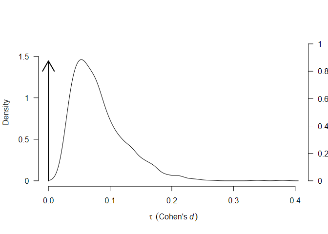
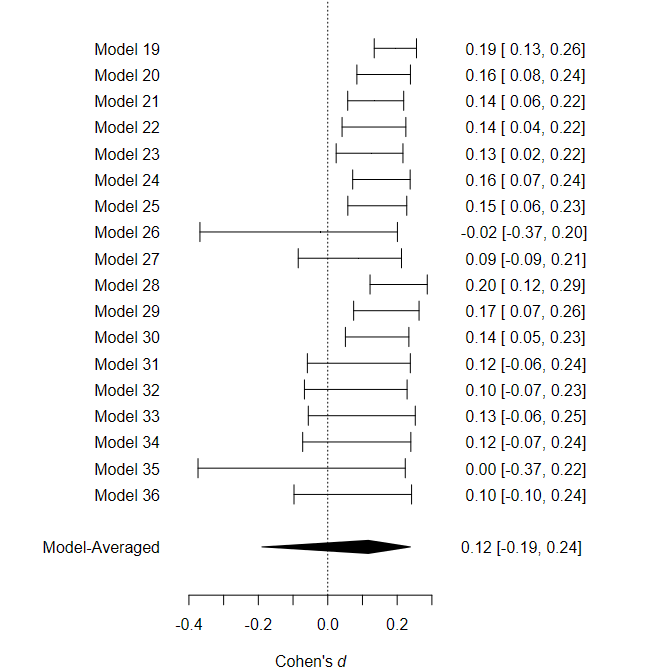
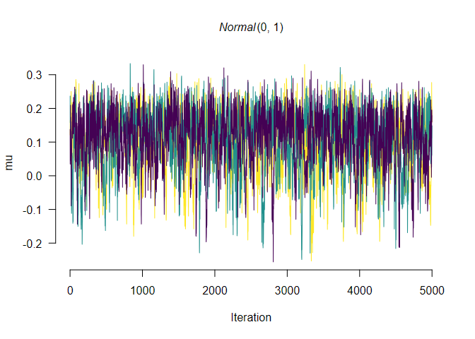

Robust Bayesian Meta-Analysis (RoBMA)
This package estimates an ensemble of meta-analytic models (assuming either presence or absence of the effect, heterogeneity, and publication bias) and uses Bayesian model averaging to combine them. The ensemble uses Bayes factors to test for the presence of absence of the individual components (e.g., effect vs. no effect) and model-averages parameter estimates based on posterior model probabilities. The user can define a wide range of non-informative or informative priors for the effect size, heterogeneity, and weight functions. The package provides convenient functions for summary, visualizations, and fit diagnostics.
See our preprint, Maier, Bartoš, & Wagenmakers (2020) at https://doi.org/10.31234/osf.io/u4cns, for more details about the implementation, examples, and simulation studies.
We also prepared multiple vignettes that illustrate functionality of the package:
- Explanation and dealing with warnings and errors
- Reproducing Bayesian Model-Averaged Meta-Analysis (BMA)
- Fitting custom meta-analytic ensembles
Installation
The package requires JAGS 4.3.0 to be installed. The release version can be installed from CRAN:
install.packages("RoBMA")
and the development version of the package can be installed from GitHub:
devtools::install_github("fbartos/RoBMA")
Example
To illustrate the functionality of the package, we reproduce1 the example in Maier et al. (2020) where we use the RoBMA package to re-analyze a subset of Anderson et al. (2010) meta-analysis of effects of violent video games on aggression (the original dataset can be found here).
First, we load the dataset which is included with the package. The dataset contains correlational coefficients, sample sizes, and labels for 27 experimental studies focusing on the effect of violent videogames on aggressive behavior.
library(RoBMA) #> Loading required namespace: runjags #> module RoBMA loaded data("Anderson2010", package = "RoBMA") head(Anderson2010) #> r n name #> 1 0.2445 90 Anderson (2004; Exp. 2) #> 2 0.1883 204 Anderson (2004; Exp. 3) #> 3 0.2441 103 Anderson (in press) #> 4 0.1585 196 Anderson (2000) #> 5 0.1680 148 Arriaga (2008) #> 6 0.2698 90 Anderson (2003)
Then, we fit the meta-analytic model ensemble that is composed of 12 models (the default settings of RoBMA fitting function). These models are all possible combinations of priors for the following parameters (the prior parameters for μ and τ are defined on Cohen’s d transformed scale if correlation coefficients are supplied):
-
μ (the mean parameter)
- a spike at zero, representing a null effect
- a standard normal distribution, representing the alternative hypothesis
-
τ (the heterogeneity parameter)
- a spike at zero, representing no heterogeneity (fixed effect)
- an inverse gamma distribution with shape = 1 and scale = 0.15, representing presence of heterogeneity (random effects), based on Erp et al. (2017)
-
ω (the weights parameters for modeling publication bias)
- a spike at 1, representing no publication bias (all studies have the same probability of being published)
- a two-steps two-sided weight-function with p-values cut-off at 0.05 and weights following a cumulative sum of Dirichlet distribution with alpha = (1,1)
- a three-steps two-sided weight-function with p-values cut-offs at 0.05 and 0.10 and weights following a cumulative sum of Dirichlet distribution with alpha = (1,1,1)
The prior odds of these prior distributions are by default set to make all three model categories equally likely a priory (0.5 prior probability of an effect, 0.5 prior probability of heterogeneity, and 0.5 prior probability of publication bias).
The default models using the correlation coefficients can then be fitted using the RoBMA() function (all input is internally transformed into t-statistics and degrees of freedom):
fit <- RoBMA(r = Anderson2010$r, n = Anderson2010$n, study_names = Anderson2010$name)
The main model summary can be obtained using the summary.RoBMA() function.
The first table shows an overview of the model types -the number of models, prior and posterior probability, and inclusion Bayes factor. As we can see, the data show strong evidence for the presence of effect and publication bias and weak evidence for lack of heterogeneity.
The second table shows model-averaged estimates weighted by the individual models’ posterior probabilities. The mean estimate μ (converted back to correlation scale) is considerably lower than in the original meta-analysis due to the publication bias correction. The heterogeneity estimate τ (on the Cohen’s d scale) has most of its probability mass around zero due to the higher support of models with no heterogeneity. The parameters omega, representing the weights at each p-value interval are decreasing with increasing p-values, showing the publication bias.
summary(fit) #> Call: #> RoBMA(r = Anderson2010$r, n = Anderson2010$n, study_names = Anderson2010$name) #> #> Robust Bayesian Meta-Analysis #> Models Prior prob. Post. prob. Incl. BF #> Effect 6/12 0.500 1.000 11286565.669 #> Heterogeneity 6/12 0.500 0.131 0.151 #> Pub. bias 8/12 0.500 0.998 532.522 #> #> Model-averaged estimates #> Mean Median 0.025 0.975 #> mu 0.151 0.151 0.094 0.207 #> tau 0.010 0.000 0.000 0.098 #> omega[0,0.05] 1.000 1.000 1.000 1.000 #> omega[0.05,0.1] 0.515 0.502 0.100 0.962 #> omega[0.1,1] 0.122 0.095 0.020 0.367 #> (Tau is on Cohen's d scale.) #> (Estimated omegas correspond to two-sided p-values)
We can visualize the estimated parameters using the plot.RoBMA() function. In the case of parameter tau, the arrow stands for probability mass at τ = 0. Weights ω are by default plotted as the weight function, which can be changed to the individual weights estimates by setting weights = TRUE.
plot(fit, parameter = "mu")

plot(fit, parameter = "tau")

plot(fit, parameter = "omega")

Furthermore, we can inspect the individual models’ estimates mu, including the prior and posterior probability.
plot(fit, parameter = "mu", type = "individual")

Apart from plotting, the individual model performance can be inspected using the summary.RoBMA() function with argument type = "individual". An overview of the individual model MCMC diagnostics can be obtained by setting type = "models", diagnostics = TRUE (not shown here for the lack of space).
We can also visualize the MCMC diagnostics using the diagnostics function. The function can display the chains type = "chain" / posterior sample densities type = "densities", and averaged autocorrelations type = "autocorrelation". Here, we request the chains trace plot of the μ parameter of the most complex model by setting show_models = 12 (the model numbers can be obtained from the summary function with type = "models" argument.)
RoBMA::diagnostics(fit, parameter = "mu", type = "chains", show_models = 12)

The package allows to fit highly customized models with different prior distribution functions, prior model probabilities, and provides more visualization options. See the documentation to find out more about the specific functions: RoBMA(), priors(), plot.RoBMA(). The main package functionalities are to be implemented within the Meta Analysis module of JASP 0.14 (JASP Team, 2020).
Footnotes
1 - There have been changes in the way the seed is set since finishing the paper. Use the archival version of the package stored at the OSF repository to obtain identical results to those reported in the paper.
References
Anderson, C. A., Shibuya, A., Ihori, N., Swing, E. L., Bushman, B. J., Sakamoto, A., Rothstein, H. R., & Saleem, M. (2010). Violent video game effects on aggression, empathy, and prosocial behavior in Eastern and Western countries: A meta-analytic review. Psychological Bulletin, 136(2), 151.
Erp, S. van, Verhagen, J., Grasman, R. P., & Wagenmakers, E.-J. (2017). Estimates of between-study heterogeneity for 705 meta-analyses reported in psychological bulletin from 1990–2013. Journal of Open Psychology Data, 5(1).
JASP Team. (2020). JASP (Version 0.14). https://jasp-stats.org/
Maier, M., Bartoš, F., & Wagenmakers, E.-J. (2020). Robust Bayesian meta-analysis: Addressing publication bias with model-averaging. In PsyArXiv.